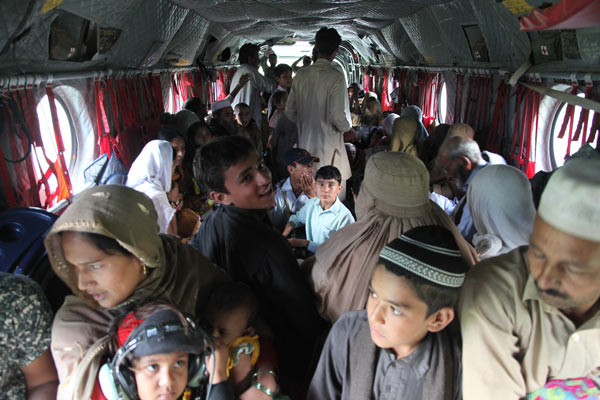
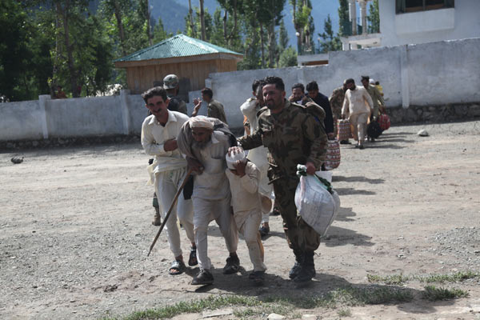
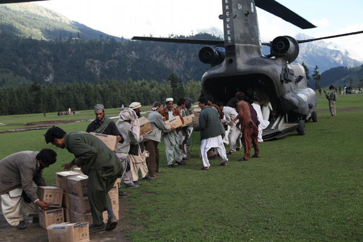
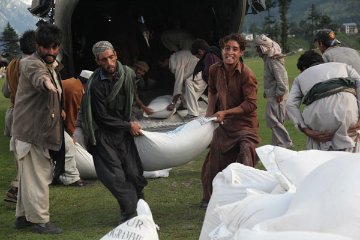
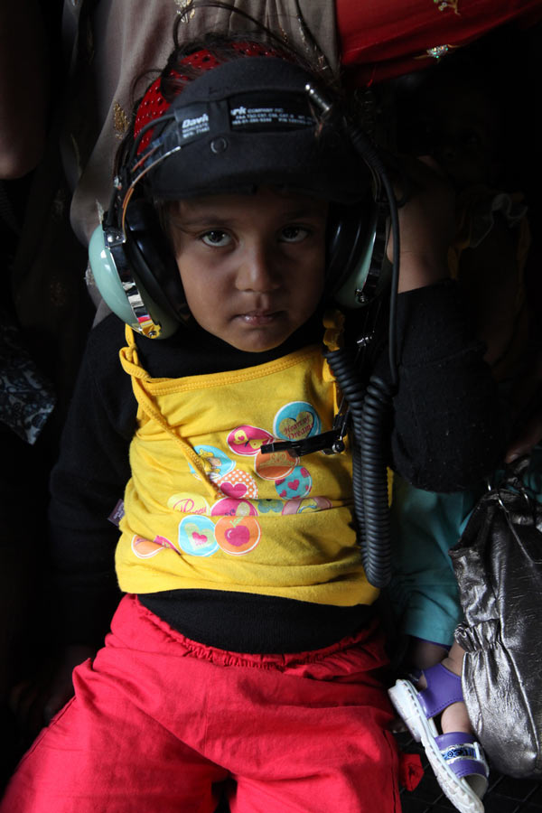
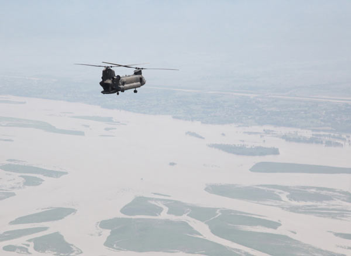

Since July, monsoon rains have caused
heavy flooding in many areas of Pakistan. The United Nations estimates
more than 20 million people are affected. In response the disaster, the
United States has launched a civilian and military relief effort in the
country. As part of that effort, US military fixed and rotary wing
aircraft are ferrying people and supplies to and from the flood zone.
Below are thirteen photos from that military response.
Please consider donating to the NGO flood relief effort here or elsewhere.

Caption: Amphibious assault ship USS Peleliu and amphibious transport
dock ship USS Dubuque steam off the coast of Pakistan in the early
stages of supporting the Pakistani government and military with heavy
lift capabilities to bring relief to those affected in flooded regions
of Pakistan. Peleliu and Dubuque are a part of Peleliu Amphibious Ready
Group. Photo by Petty Officer 2nd Class Andrew Dunlap.

Caption: A forklift with bags of humanitarian assistance is loaded by
Pakistani workers into a U.S. Marine Corps helicopter that has arrived
to take over the flight role from the U.S. Army in the delivery of
humanitarian assistance to the flood victims as part of the disaster
recovery effort in Pakistan, Khyber Pakhtunkhwa Province, Pakistan, Aug.
13. Photo by Staff Sgt. Horace Murray.

Caption: Pakistani Air Force members help unload thousands of Halal
meals from a U.S. Air Force C-130H at Peshawar, Pakistan, Aug. 1, 2010.
The meals will go to Pakistanis affected by the floods that have
devastated the region. The C-130H is assigned to the 455th Air
Expeditionary Wing at Bagram Airfield, Afghanistan. Photo by Staff Sgt.
Christopher Boitz.

Caption: Pakistani Air Force members help unload thousands of Halal
meals from a U.S. Air Force C-130H at Peshawar, Pakistan, Aug. 1, 2010.
The meals will go to Pakistanis affected by the floods that have
devastated the region. The C-130H is assigned to the 455th Air
Expeditionary Wing at Bagram Airfield, Afghanistan. Photo by Staff Sgt.
Christopher Boitz.

Caption: Pakistan civilians from the town of Kalam are gathered
inside a U.S. Army Chinook helicopter which has come to deliver
humanitarian assistance and pick up victims of the flood, Khyber
Pakhtunkhwa province (formerly North West Frontier province), Pakistan,
Aug. 9, 2010. Photo by Staff Sgt. Horace Murray.

Caption: A member of the Pakistan military points in the direction to
where the passengers from the U.S. Army Chinook helicopter need to go
after being delivered to the town of Khwazakhela from the flooding,
Khyber Pakhtunkhwa province (formerly North West Frontier province),
Pakistan, Aug. 9, 2010. Photo by Staff Sgt. Horace Murray.

Caption: A Pakistani military member assists a man and child during
the evacuation process to board a U.S. Army Chinook helicopter to the
town of Khwazakhela, during the flood recovery effort in Khyber
Pakhtunkhwa province, Pakistan, Aug. 11. Photo by Staff Sgt. Horace
Murray.

Caption: Pakistan men from the town of Kalam form a chain to quickly
unload a U.S. Army Chinook helicopter that has delivered humanitarian
assistance and pick up victims of the flood, Khyber Pakhtunkhwa province
(formerly North West Frontier province), Pakistan, Aug. 9, 2010. Photo
by Staff Sgt. Horace Murray.

Caption: Pakistan men from the town of Kalam carry a bags of flour,
while they unload a U.S. Army Chinook helicopter which has come to
deliver humanitarian assistance and pick up victims of the flood, Khyber
Pakhtunkhwa province (formerly North West Frontier province), Pakistan,
Aug. 9, 2010. Photo by Staff Sgt. Horace Murray.

Caption: A little girl from who is evacuated from the town of Kalam
wears a set of headphones to reduce the loud aircraft sound aboard a
U.S. Army Chinook helicopter which has come to deliver humanitarian
assistance and pick up victims of the flood, Khyber Pakhtunkhwa province
(formerly North West Frontier province), Pakistan, Aug. 9, 2010. Photo
by Staff Sgt. Horace Murray.

Caption: U.S. Army Sgt. Kristopher Perkins, a Chinook crew chief with
Company B, Task Force Raptor, 3rd Combat Aviation Brigade, TF Falcon,
holds a child in his lap after picking up 114 Pakistan victims during
flood relief missions, Aug. 11, out of the Swat valley, Pakistan. Photo
by U.S. Army Sgt. Monica K. Smith.

Caption: A U.S. Army Chinook helicopter flies over the flood affected
area in Pakistan on a return flight from delivering hummanitarin
assistance and evacuating personnel to the town of Khwazakhela, as part
of the flood recovery effort in Khyber Pakhtunkhwa province, Pakistan,
Aug. 11. Photo by Staff Sgt. Horace Murray.

Caption: A Chinook helicopter waits at the end of the hangar holding
supplies for disaster relief due to flooding, Ghazi base, Khyber
Pakhtunkhwa province, Pakistan, Aug. 7. Photo by Staff Sgt. Horace
Murray.